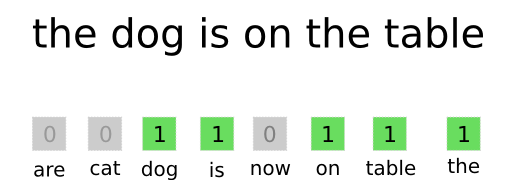

今天来聊一聊文本表示(Document Embedding)的一些方法. 这里列举得并不完全, 并且对于其中的一些比较复杂的方法, 这里也不会做深入地讲解(可能会单独写成一篇).
前言
在前面的一些文章中, 提及到了不少单词表示(Word Embedding)的方法, 比如词袋法(Bag of Words), 预训练方法word2vec, 以及非常腻害的BERT.
在有了Word Embedding之后, 可以用在各种NLP的任务中, 提升模型效果, 也可以延伸到其它的领域, 如item2vec, node2vec等.
但是只有Word Embedding还是不够的, 在一些任务中, 其实相比单词的表示, 更希望得到一个更好的文本(句子, 段落, 文章)的表示.
假如有了比较好的Document Embedding, 那么一些任务就会变得简单, 如文本分类, 文本相似度比较. 同时在一些其它任务中也能够用到, 如问答系统, 摘要提取等.
所以, 这里就主要来列举一些现有的Document Embedding方法, 不过限于篇幅问题, 以及本宝宝的水平问题QAQ, 列举得并不完全, 并且也不会做详细地探究.
下面会先阐述一些经典的(非深度学习)的方法, 然后会按无监督/有监督划分来列举更多的方法.
经典方法
Bag-of-Words
这个方法相信我不说, 大多数同学应该都知道, 因为它是那么地朴实无华.

方法非常简单, 就是首先准备一个词表, 包含所有可能会用到的单词, 假如词表大小为N, 那么对应的就有一个长度为N的向量, 向量中每个位置代表一个单词.
给定一份文本, 对于在文本中出现过的单词, 设置向量对应位置为1, 其余位置为0.
这个方法的一些比较明显的缺点是:
- 当词表较大时, 向量会非常稀疏.
- 没有考虑到语义/语法信息.
同时它还有一个升级版, 就是Bag-of-N-Gram, 比如Bi-Gram, 即将单词进行两两组合. 使用组合后的N-Gram来表示文本.
举个栗子, “I love machine learning”这句话, 用Bi-Gram表示为”I love, love machine, machine learning”, 然后将向量上的这三个Bi-Gram对应位置标为1.
原本的Bag-of-Words其实就已经非常稀疏了, Bag-of-N-Gram直接超级加倍…
TF-IDF
关于TF-IDF, 在我的这篇文章中有过比较详细的讲解, 原理其实也比较简单, 一句话概括地话, 就是在Bag-of-Words的基础上, 考虑词频(TF)的同时, 还考虑了逆文档频率(IDF).
TF-IDF得到的关于一份文本的向量, 可以直接通过其中每个单词的值的大小, 来了解该文本中, 哪些单词是具有代表性的.
相比Bag-of-Words, 在文本表示的效果上要好一些, 并且还可以用来提取关键词. 关于向量维度(词表大小), 可以通过过滤一些高频词和低频词, 在尽可能保留信息的情况下, 有效地减少维度.
LDA
Latent Dirichlet Allocation, 又称为文本主题模型, 个人感觉与一些其它NLP中的经典方法, 如CRF, 算是相对比较难的, 涉及到了不少数学/统计的基础知识.
对LDA原理感兴趣, 同时想了解其细节原理的, 非常推荐一份叫做<数学八卦>的资料. 一看这名字, 好像不是讲LDA的啊QAQ, 其实就是讲的LDA, 会从其涉及到的一些数学/统计知识开始, 如伯努利分布, 多项式分布, 贝塔分布, 狄利克雷分布…用同时生动的栗子与图例, 来讲解LDA的原理.
当然了, 如果感觉看完一遍还是有些没看懂怎么办, 那就找个时间再看一遍, 总有一天对这个问题的理解会收敛, 到时候就自然懂了o(*≧▽≦)ツ
咳…如果用通俗的语言来讲LDA到底干了一件神马事, 我觉得是这样的. 对于LDA算法来说, 它认为在生成一篇文档的时候, 会首先确定这篇文档的主题分布(如娱乐30%, 游戏50%, 体育20%), 然后每次按分布, 选取一个主题(如选到了游戏), 然后在这个主题之下, 对应一个单词出现的分布, 再在这个单词分布中, 得到一个单词.
也就是说, 在有了一篇文档主题的分布, 以及各主题下单词的分布后, 通过不停地”摇色子”, 就能够得到一篇文章(词袋).
那么, LDA又是怎么得到一篇文档主题的分布, 和各主题下单词的分布的呢?
根据LDA的生成文档过程, 得到的文档中, 除了单词以外, 还有每个单词对应的主题. 关于一篇文档主题的分布, 可以通过文档词袋中每个单词对应的主题来进行统计. 而各主题下单词的分布, 也可以通过统计所有文档中的单词/主题关系来确定.
而一开始的时候, 对于LDA来说, 模型参数是文档主题的分布, 各主题下单词的分布, 这是需要学习的; 隐变量是每篇文档中每个单词对应的主题, 这个在一开始可以随机初始化.
对于LDA的学习过程来说, 由于有隐变量的存在, 所以其中一种方法就是使用EM(期望最大)算法, 这个也在我的这篇文章中有详细讲解. 在这里, 用EM算法简单地来说, 就是反复迭代, 通过隐变量来优化模型参数, 然后再通过模型参数来更改隐变量, 直到最后收敛.
最后, 得到文档主题的分布, 这正是我们所需要的, 其维度是预设的, 是一个稠密向量, 每个位置表示表示某种主题(也许可以通过查看各文档分布来确定其含义). 同时在有了各主题下单词的分布后, 对于新的(未加入模型训练)的文档, 也能够很快地确定.
关于LDA的数学原理, 以及效果(比如和TF-IDF)比较, 以后可能会单独用一篇文章来介绍.
本质上来说, LDA是通过文档与单词的共现关系, 来得到了主题的分布, 具有这样思想的模型还有一些, 比如LSA(隐语义模型), 通过文档与单词的共现矩阵, 通过矩阵分解或者其他方法, 得到每篇文档与每个单词的向量表示(Embedding), 这里就不做更多叙述.
无监督学习方法
其实上面的一些经典方法, 本质上也属于无监督方法, 而这里的无监督学习方法, 特指与深度学习或者神经网络挂钩的一些方法.
其实由于在NLP领域中, 由于本身有着海量的数据, 但有标注的数据却是少数, 所以无监督学习的方法在这里可以大放异彩, 下面介绍几种方法(我知道的).
Averaging Word Embeddings
一种在这里比较质朴的一种方法, 就是Averaging Word Embeddings, 即将一段文本中, 出现的Word Embeddings(如word2vec)进行平均, 来得到这段文本所对应的Document Embedding.
这样做确实是有一定效果的, 但其中一个问题是, 当文本的长度比较长的时候, 将众多的Word Embeddings进行平均, 可能会将原本的一些信息掩盖掉.
对于简单的Averaging Word Embeddings可以有一些改进:
结合TF-IDF
即不是简单的平均, 而是加权平均, 权重可以是TF-IDF; 同时对于长文本, 可以借助TF-IDF得到的关键词, 仅对关键词进行平均, 尽可能保留重要信息.
文本分段
将长文本, 按一定规则分成众多的短文本, 对每个短文本使用Averaging Word Embeddings进行表示. 而在得到了一系列短文本的表示后, 根据具体任务进行具体的使用.
Doc2vec
既然在单词的表示上, 有word2vec, 那么在文本的表示上, 也有对应的doc2vec, 而且它们不仅名字相似, 算法也是几乎一样, 下面就来介绍一下doc2vec算法.
与word2vec分为CBOW和Skip-Gram一样, doc2vec也有类似的两种形式.
与CBOW对应的形式如下图:
除了word2vec中出现的词向量以外, 还多出了一个代表文本的向量. 在使用滑动窗口, 在一段文本中训练模型时, 根据不同的窗口, 对应不同的输入词向量和目标词向量, 但是一段文本对应一个相同的文本向量. 这样训练了一遍之后, 会得到该文本对应的文本向量, 也会对出现在文本中单词的向量进行学习.
与Skip-Gram对应的形式如下图:
这里非常直观, 在一段文本的一个窗口中, 用文本向量去预测出现的单词.
通过doc2vec的学习过程, 最终与word2vec一样, 也可以得到各个单词对应的向量表示(在Skip-Gram可以理解为softmax对应想权重系数). 当接收到一段新的文本, 要进行推断时, 可以首先随机初始化该文本的向量, 然后随着滑动窗口进行学习, 这时候仅仅调整文本向量的表示, 而不再修改其它(如单词向量)参数, 最后返回该文本的向量.
可以看到, doc2vec的原理是非常简单的, 不过这里还没有验证过其效果到底如何, 根据其原理, 应该是当文本较长时, 会表示得更加准确.
SBERT
这里的SBERT的全称是Sentence-BERT, 关于BERT的原理, 可以参看我的这篇文章.
了解BERT的同学都知道, 在BERT中有一个特殊字符[CLS], 在学习的时候用于判断是否为下一句话的学习任务, 可以用来表示输入文本的整体含义.
但是在实际使用中发现, BERT的[CLS]字符对应的向量对于分类任务(如文本分类), 有还不错的效果, 但是对于其它的一些任务可能就不太行了. 举个栗子, 给定一个句子, 要在语料库中找出与之相似度最高的一些句子. 如果直接使用BERT的[CLS]对应的向量来表示一个句子, 然后计算句子间两两的相似度(如余弦相似度), 效果不是很好. 如果将两个句子同时输入BERT, 然后再外接输出层, 用以计算相似度, 效果还不错, 但问题是假如语料库中有一千条句子, 那么目标句子需要与这一千条句子都同时过一遍BERT, 使用过BERT的同学应该感受过BERT的速度…
因此这才在BERT的基础上, 有了Sentence-BERT. SBERT的总体思路就是, 对于每个句子, 都用训练好的BERT事先离线过一遍, 保存好对应的向量. 当接受到一条新的句子时, 只需要过一遍BERT, 然后再针对向量计算相似度即可, 矩阵运算非常快.
那么问题来了, 怎么调整BERT, 使得其输出的句子向量可以更好地表示句子呢? 原作者采用了如下的模型框架:
先看左边的模型, 两个BERT模型的参数是共享(一样)的, 两个句子分别经过BERT模型后, 再经过pooling层, 得到对应的表示向量$u$和$v$. 这里的pooling层, 作者尝试了三种方式, 分别是:
CLS向量策略
只使用[CLS]表示整句话的向量.
平均池化策略
即用BERT输出的词向量的平均, 作为整句话的表示.
最大池化策略
即对BERT输出的词向量做最大操作, 将得到的向量作为整句话的表示.
从实验结果来看, 平均池化策略效果是最好的.
在得到了两段句子的表示向量$u$和$v$以后, 再通过一些监督学习任务进行微调. 比如在上面左图中, 将两个向量以及它们的向量差$(u-v)$进行拼接, 再经过输出层, 进行分类任务(如两个句子是否相似)的训练. 或者如右图, 对两个向量计算余弦相似度, 用回归任务进行训练.
Sentence-BERT其实在算法上并没有多少创新, 不过通过这样的调整后, 使得在工程上快速地获取文本表示, 匹配相似文本等任务上效率有很大提升.
有监督学习方法
上面介绍了一些无监督学习的方法, 下面再介绍一些有监督学习的方法.
Text Classification
一个比较常见的有监督学习任务, 就是文本分类了.
比如现在有了一堆的文本, 每一份文本对应一个类别, 表示其主题, 那么就可以使用一些深度学习的方法, 通过训练以后得到的隐向量, 来作为文本的表示向量.
比较经典的有使用MLP, 即多层全连接神经网络, 输入特征可以是一些预处理好的结构化特征(如TF-IDF). 在通过文本分类任务训练好以后, 可以取输出层前一层的隐向量, 来作为文本的表示向量.
除了使用MLP以外, Bi-LSTM也是不错的选择, 通过训练以后, 将正向与反向的LSTM最后的隐向量拼接得到的向量, 作为文本表示.
不过想单纯地依靠分类任务, 来获取到不错的文本表示向量的话, 应该需要多积累一些训练样本, 在小样本上面的表示应该不会太好.
DSSM
DSSM的英文全称为Deep Structured Semantic Model, 可以翻译为深度语义匹配模型.
考虑一个搜索的场景, 在输入一个Query之后, 要在众多的Doc中寻找最为匹配的项, 那么这时候如果将Query经过某种模型, 得到其向量表示, 再与Doc对应的向量进行相似度计算, 将相似度高的进行返回, 即可完成匹配.
其实这个思路好像和前面的SBERT比较相似, 不过一个较大的区别是, SBERT是在有了BERT模型以后, 进行微调; 而DSSM算是从头开始进行有监督地训练.

上图就是DSSM的结构, 其中的几个关键部分:
输入层:
对于输入层, 常规的DSSM采用的是词袋模型.
具体说来, 比如是英文, 那么采用Letter-Trigram, 即用三个英文字母的组合来表示一个token. 这样做以后, 词表(或者说向量)的大小约为两万. 而中文则采用字作为token, 常用的子大概也是两万左右.
将一段原始文本, 切分为token后, 表示为词袋向量, 就是输入了.
中间层:
中间层其实就是一些全连接网络, 用到的激活函数为$\tanh$. 可以取中间层的最后一层的输出, 作为文本的表示向量.
匹配层:
最后的匹配层, 会首先计算Query与各个Doc的余弦相似度, 然后再经过一个softmax层, 来进行学习. 在训练的时候, 一般需要进行采样, 即针对一个Query, 需要有一个真正匹配的Doc, 还要有一些不匹配的Doc作为负例, 类似负采样.
DSSM的结构与原理也比较简单, 而在后来针对原始的模型, 又做了更多的调整. 比如使用CNN来作为中间层, 更好地提取上下文信息; 或者将原始文本先经过一个LSTM, 将LSTM输出的向量代替原本的词袋向量等.
DSSM模型除了在NLP相关的场景中可以使用, 基于其向量匹配的核心思想, 在其它一些场景, 如推荐系统的召回中, 也可以进行使用.
小结
通过上面列举的一些具体的方法, 包括经典的方法(如词袋模型, TF-IDF, LDA), 无监督学习方法(如Averaging Word Embeddings, Doc2vec, SBERT), 有监督学习方法(如DSSM等).
那么哪种方法最好用呢?
这个问题其实不能简单地获得答案, 应该要根据具体的任务场景, 数据维度, 工程实现, 模型效果来进行综合考虑.
我个人认为, 在面对一个具体的任务时, 可以采用由简到繁的模式, 即先采用一些简单的好实现的方法(如TF-IDF, Averaging Word Embeddings)来作为一个base line, 然后再尝试一些相对复杂一些的方法, 来观察模型在任务上是否有提升.
当然了, 如果是一个有经验的专家, 应该一来就知道哪些方法效果更好, 减少尝试的时间.